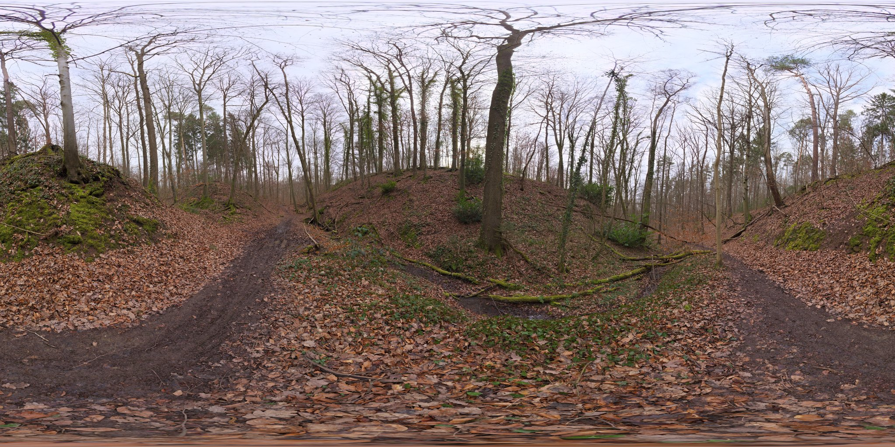
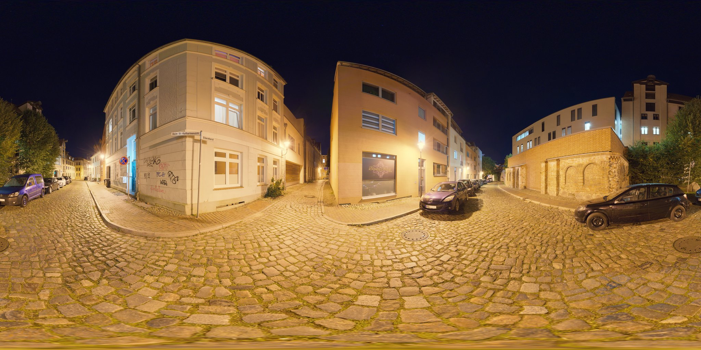

Tap a film to step inside its world. Look around to find the interactive hotspots.
An epic journey through the Colombian Amazon across two timelines. Colombia's first Oscar-nominated film.
Tenants of an old Bogotá house devise a genius plan to resist eviction. A beloved Colombian classic.